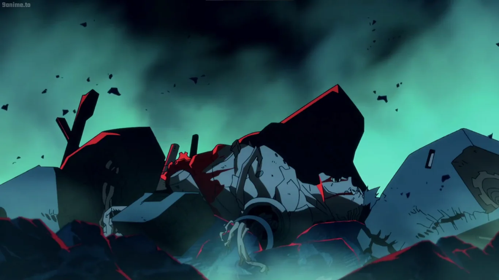

David se vê no caos das ruas de Santo Domingo. Lembranças de sua vida anterior misturam-se com seu desejo de escapar da realidade, enquanto ele tenta encontrar Lucy.
No apartamento de Lucy, você encontra pistas sobre sua localização, mas também percebe que a Arasaka está atrás dela. O que você fará agora?
Na gangue dos Edgerunners em Watson, você é recebido com desconfiança. Eles podem ter informações cruciais sobre Lucy, mas você precisa provar seu valor.
O computador revela que Lucy está sendo mantida em um laboratório secreto da Arasaka em Corpo Plaza. Você precisa agir rapidamente.
Você sai em busca de ajuda, mas ao longo do caminho, percebe que está mais sozinho do que nunca. A sensação de desespero começa a tomar conta.
Após completar a missão, você conquista a confiança da gangue. Eles revelam a localização de Lucy, mas você deve agir rápido.
Convencendo a gangue a ajudá-lo, você consegue um grupo para a missão. Todos estão cientes dos riscos envolvidos.
No laboratório da Arasaka, a tensão está no ar. Você deve escolher entre hackear os sistemas de segurança ou procurar uma entrada secreta.
Você decide voltar ao apartamento de Lucy e encontra um chip com dados que podem ser a chave para encontrá-la.
O hack dá certo, mas você dispara alarmes. O tempo é curto, e você ouve passos se aproximando.
A entrada secreta leva você a um corredor escuro. Você precisa ser rápido e discreto para encontrar Lucy.
Finalmente, você encontra Lucy em uma sala de contenção. Com um plano ousado, você deve libertá-la antes que os seguranças cheguem.
Você consegue libertar Lucy, mas a Arasaka não irá deixar isso barato. A fuga é intensa e cheia de perigos.
Após uma fuga desesperada, você e Lucy conseguem fugir, finalmente o sonho se realizou.

Com coragem, você se coloca entre Lucy e os seguranças, permitindo que ela escape. Você luta bravamente, mas a Arasaka é implacável. Lucy se vê forçada a fugir sozinha, levando a esperança de um futuro, mas deixando você para trás. Sua luta contra a opressão continua, mas a solidão pesa sobre você.
